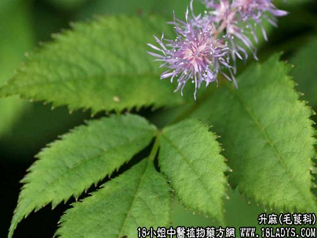

【中药概述】
升麻为毛茛科草本植物大三叶升麻的根茎。辛、甘，微寒。归肺、脾、大肠、胃经。
1．发表逶疹：用于风热表证，麻疹、斑疹初起，如（阎氏小儿方论<升麻葛根汤>）；及风热感冒，头痛咽痛等证。如（<痘疹仁端录>宣毒发表汤）。
2．清热解毒：用于阳明胃热所致头痛、齿痛、咽喉肿痛及口舌生疮，如（清胃散、牛蒡子汤）。
3．升阳举陷：用于中气下陷的气短、倦怠、子宫脱垂、久泻脱肛等，有升举脾胃清阳之气的作用，如（补中益气汤）、（<医学衷中参西录>升陷汤：生黄芪，知母，柴胡，桔梗，升麻）。
【药效鉴别】
柴胡退热效著，善治往来寒热，升提之力不及升麻。升麻发表力弱，在解表剂中常用作辅药用，长于举陷。
【临证应用】
本品配石膏，黄连，为末，每服6g，治阳明经热毒、胃热齿痛、口舌生疮等。
【药理作用】
对结核杆菌有抑制作用。能抑制心脏、减慢心率、降低血压。
【化学成分】
含苦味素、升麻碱、升麻吉醇木糖甙、北升麻醇、异阿魏酸、齿阿米素、咖啡酸、鞣质等。
【用量用法】
3——10g，水煎服。升阳宜炙用。
【使用注意】
阴虚火旺，气逆不降及肝阳上亢头痛，斑疹已透者不宜。剂量过大可引起头痛、震擅、四肢强直性收缩，呼吸困难等。
【附】
蜜升麻：微辛、甘，微寒。归肺、胃、大肠经。以升举阳气作用显著，多用气虚下陷、子宫下垂、下痢脱肛等，常与黄芪、人参、柴胡、白术等同用。